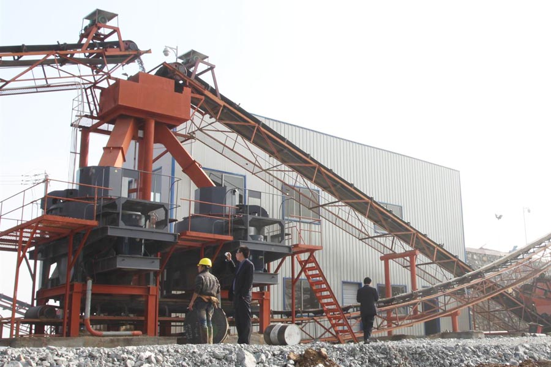

Construction waste crushing production line

Mobile construction waste crushing station for urban construction waste crushing.
gravel crushers for sale
gravel crushers for sale
River gravel crushing plastic need to use river pebbles Sand, natural river pebbles sleek, rounded, does not meet the material needs of many areas, it is necessary to use river gravel crusher its shape trimmed to change a more three-dimensional, more uniform particle size, after crushing river gravel sand processing more granularity to meet the needs of further processing, the application greatly enhance the taste.
When it comes to production, sales river gravel crusher manufacturers, have to mention CAG, CAG company is located in Zhengzhou, Henan, China, the company not only has the geographical advantages, but also has a more skillful production experience, leading technology, strong research and development capabilities, the company Production of river gravel Sand has the following performance advantages:

1, performance-based
River gravel crusher has better performance basis to provide users with a more objective economic benefits. River gravel Sand sand not only has a good effect, but also have a very good energy saving effect, working out of river pebbles finished material, whether in gradation, grain shape, size, or in terms of fineness modulus, all with a high level of quality. Stability of river gravel crusher run stronger, bigger capacity.
2, the design
Sand production company external structure is more reasonable river gravel, easy to move, operation and maintenance easier, the device uses the German advanced automotive paint process, not only to make the device look more attractive, but also on the equipment better protection role reducing the occurrence of corrosion, make equipment more durable, longer life.
3, process technology
River gravel crusher not only have advanced welding technology, and its production of timber, interior space design are combined with foreign advanced technology and the needs of domestic users, ensure that the equipment in the production process, its components can play the best performance advantages. River gravel crusher crushing cavity using a variety of convenient two kinds of crushing principle of conversion, increase production flexibility and productivity.
Leave Me A Message, Now
If you have any questions regarding equipment prices, production line configuration or other problems, you can send a message to us, we will contact you soon.